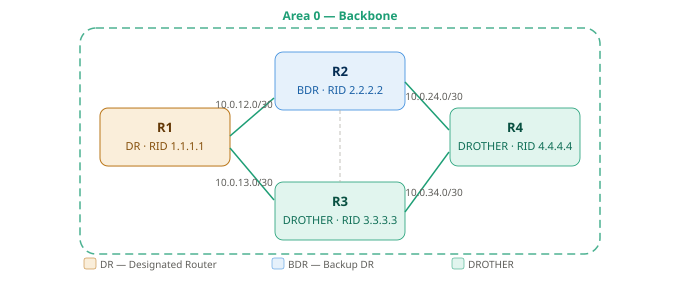
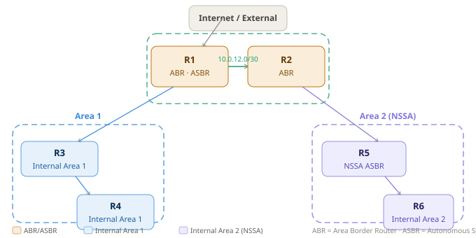

OSPFv2 - Повна шпаргалка з налаштування
Курс: Комп'ютерні мережі | 2-3 курс
1 Принцип роботи OSPF
OSPF (Open Shortest Path First) - протокол динамічної маршрутизації стану каналу (Link-State). На відміну від дистанційно-векторних протоколів (RIP, EIGRP), кожен маршрутизатор OSPF будує повну топологічну карту мережі та самостійно розраховує найкоротший шлях до кожної підмережі за алгоритмом Дейкстри (SPF)
1.1 Алгоритм роботи (покроково)
1. Встановлення сусідства (adjacency)
└─ маршрутизатори обмінюються Hello-пакетами
└─ погоджують параметри: Area ID, Hello/Dead timer, MTU, аутентифікація
2. Обмін LSA (Link-State Advertisement)
└─ кожен маршрутизатор описує свої канали та сусідів у LSA
└─ LSA поширюються по всій зоні → формується LSDB
3. Побудова топологічної карти (LSDB - Link-State Database)
└─ всі маршрутизатори зони мають ідентичну LSDB
4. Розрахунок SPF-дерева (Dijkstra)
└─ кожен маршрутизатор незалежно обраховує найкоротший шлях
└─ результат → таблиця маршрутизації (RIB)
5. Підтримка актуальності
└─ Hello-пакети кожні 10 сек (P2P) або 10 сек (broadcast)
└─ Dead interval: 40 сек - якщо немає Hello → сусід "мертвий"
└─ При змінах топології → flood нових LSA → перерахунок SPF
1.2 Метрика OSPF - Cost
OSPF використовує cost як метрику. Менший cost = кращий шлях
Cost = Reference Bandwidth / Interface Bandwidth
Reference Bandwidth за замовчуванням: 100 Mbps (100 000 Kbps)
FastEthernet (100 Mbps): 100 / 100 = 1
GigabitEthernet (1 Gbps): 100 / 1000 = 0.1 → округлюється до 1 (!)
10GigabitEthernet: 100 / 10000 = 0.01 → також 1 (!)
Проблема з reference-bandwidth за замовчуванням
В мережах з Gigabit та 10G інтерфейсами всі отримують cost=1 - OSPF не розрізняє їх. Завжди змінюй reference-bandwidth на відповідне значення для твоєї мережі (наприклад 10000 для 10G)
1.3 Вибір Router ID (RID)
RID - унікальний ідентифікатор маршрутизатора в OSPF. Вибирається автоматично:
Пріоритет вибору RID:
1. Вручну налаштований: router-id X.X.X.X ← завжди використовуй!
2. Найвища IP-адреса loopback-інтерфейсу
3. Найвища IP-адреса фізичного інтерфейсу
Завжди налаштовуй RID вручну
Без явного router-id RID може змінитись при зміні IP-адрес або додаванні інтерфейсів. Це призводить до перебудови сусідства і нестабільності мережі
1.4 DR/BDR - Designated Router / Backup DR
На broadcast-мережах (Ethernet) OSPF обирає DR та BDR для зменшення кількості LSA-обмінів.
📁 Схема Area 0 з DR/BDR:
assets/network-configs_ospf_1.svg

Вибір DR/BDR:
1. Найвищий OSPF Priority (за замовчуванням: 1, діапазон: 0–255)
Priority = 0 → маршрутизатор ніколи не стане DR/BDR
2. При рівному Priority - перемагає найвищий Router ID
DR/BDR не змінюються автоматично
Якщо з'явився маршрутизатор з вищим пріоритетом - DR не змінюється до наступного перезапуску OSPF або команди clear ip ospf process. OSPF DR/BDR - "non-preemptive"
1.5 Типи LSA
| Тип | Назва | Генерує | Поширення |
|---|---|---|---|
| 1 | Router LSA | Кожен маршрутизатор | В межах зони |
| 2 | Network LSA | DR | В межах зони |
| 3 | Summary LSA | ABR | Між зонами (з Area 0) |
| 4 | ASBR Summary LSA | ABR | Між зонами |
| 5 | AS External LSA | ASBR | По всьому OSPF-домену |
| 7 | NSSA External LSA | ASBR в NSSA | Тільки в NSSA зоні |
2 Однозонна конфігурація (Single Area OSPF)
📁 Схема:
assets/network-configs_ospf_1.svg
Всі маршрутизатори - Area 0
2.1 Базове налаштування на всіх маршрутизаторах
R1 (буде DR - найвищий пріоритет):
! Налаштування loopback для стабільного RID
interface Loopback0
ip address 1.1.1.1 255.255.255.255
! Запуск OSPF
router ospf 1
router-id 1.1.1.1
! Оголосити всі інтерфейси в Area 0 (маска 0.0.0.255 = /24 підмережі)
network 10.0.0.0 0.0.255.255 area 0
network 1.1.1.1 0.0.0.0 area 0
! Reference bandwidth для коректного cost на GigabitEthernet
auto-cost reference-bandwidth 1000
! Підвищити пріоритет щоб стати DR
interface GigabitEthernet0/0
ip ospf priority 255
R2 (буде BDR):
interface Loopback0
ip address 2.2.2.2 255.255.255.255
router ospf 1
router-id 2.2.2.2
network 10.0.0.0 0.0.255.255 area 0
network 2.2.2.2 0.0.0.0 area 0
auto-cost reference-bandwidth 1000
interface GigabitEthernet0/0
ip ospf priority 100 ! Другий за пріоритетом → BDR
R3, R4 (DROTHER):
interface Loopback0
ip address 3.3.3.3 255.255.255.255 ! (або 4.4.4.4 для R4)
router ospf 1
router-id 3.3.3.3
network 10.0.0.0 0.0.255.255 area 0
network 3.3.3.3 0.0.0.0 area 0
auto-cost reference-bandwidth 1000
! Пріоритет 1 за замовчуванням — не стануть DR/BDR
2.2 Налаштування cost на інтерфейсі
! Спосіб 1 — вручну задати cost на інтерфейсі
interface GigabitEthernet0/1
ip ospf cost 10
! Спосіб 2 — змінити глобальну reference-bandwidth (рекомендовано)
router ospf 1
auto-cost reference-bandwidth 1000 ! Mbps (для мережі з 1G посиланнями)
auto-cost reference-bandwidth 10000 ! Mbps (для мережі з 10G посиланнями)
2.3 Налаштування таймерів Hello/Dead
! На інтерфейсі (повинні збігатись на обох кінцях каналу!)
interface GigabitEthernet0/0
ip ospf hello-interval 10 ! за замовчуванням: 10 сек (Broadcast)
ip ospf dead-interval 40 ! за замовчуванням: 40 сек
! Прискорений варіант (для швидкої конвергенції)
interface GigabitEthernet0/0
ip ospf hello-interval 2
ip ospf dead-interval 8
! BFD (Bidirectional Forwarding Detection) — найшвидше виявлення
interface GigabitEthernet0/0
ip ospf bfd
2.4 Пасивні інтерфейси (passive-interface)
Інтерфейси до кінцевих пристроїв (LAN) не повинні надсилати OSPF Hello. Оголошувати підмережу - так, шукати сусідів - ні.
router ospf 1
! Зробити всі інтерфейси пасивними за замовчуванням
passive-interface default
! Вибірково увімкнути OSPF на інтерфейсах до сусідів
no passive-interface GigabitEthernet0/0
no passive-interface GigabitEthernet0/1
2.5 Аутентифікація OSPF
! MD5 аутентифікація на інтерфейсі (рекомендовано)
interface GigabitEthernet0/0
ip ospf authentication message-digest
ip ospf message-digest-key 1 md5 StrongPassword123
! Або — аутентифікація для всієї зони (в процесі OSPF)
router ospf 1
area 0 authentication message-digest
! SHA-256 (IOS XE 16.x+)
router ospf 1
area 0 authentication key-chain OSPF-KEYCHAIN
key chain OSPF-KEYCHAIN
key 1
key-string StrongPassword123
cryptographic-algorithm hmac-sha-256
3 Передача маршруту за замовчуванням
Маршрутизатор з виходом в Інтернет (ASBR) передає default route решті маршрутизаторів OSPF
! R1 підключений до Інтернету через статичний маршрут
ip route 0.0.0.0 0.0.0.0 203.0.113.1
! Передати default route в OSPF
router ospf 1
default-information originate ! тільки якщо є 0.0.0.0/0 в таблиці
! або:
default-information originate always ! передавати завжди (навіть без маршруту)
! з метрикою та типом:
default-information originate always metric 100 metric-type 1
metric-type 1 vs 2
Type 1 (E1): зовнішня метрика + внутрішня OSPF cost. Враховує відстань до ASBR. Type 2 (E2): тільки зовнішня метрика (за замовчуванням). Не змінюється при поширенні по домену. E1 кращий при кількох точках виходу в Інтернет
4 Багатозонна конфігурація (Multi-Area OSPF)
📁 Схема:
assets/network-configs_ospf_2.svg

4.1 Налаштування ABR (R1 - Area 0 + Area 1)
interface Loopback0
ip address 1.1.1.1 255.255.255.255
! Інтерфейс до Area 0
interface GigabitEthernet0/0
ip address 10.0.12.1 255.255.255.252
ip ospf 1 area 0 ! альтернативний спосіб оголошення (per-interface)
! Інтерфейс до Area 1
interface GigabitEthernet0/1
ip address 10.1.13.1 255.255.255.252
ip ospf 1 area 1
router ospf 1
router-id 1.1.1.1
network 1.1.1.1 0.0.0.0 area 0
auto-cost reference-bandwidth 1000
passive-interface default
no passive-interface GigabitEthernet0/0
no passive-interface GigabitEthernet0/1
4.2 Налаштування ABR (R2 - Area 0 + Area 2 NSSA)
interface Loopback0
ip address 2.2.2.2 255.255.255.255
interface GigabitEthernet0/0
ip address 10.0.12.2 255.255.255.252
interface GigabitEthernet0/1
ip address 10.2.25.1 255.255.255.252
router ospf 1
router-id 2.2.2.2
network 2.2.2.2 0.0.0.0 area 0
network 10.0.12.0 0.0.0.3 area 0
network 10.2.25.0 0.0.0.3 area 2
area 2 nssa ! оголосити Area 2 як NSSA
auto-cost reference-bandwidth 1000
4.3 Налаштування внутрішнього маршрутизатора Area 1 (R3)
interface Loopback0
ip address 3.3.3.3 255.255.255.255
interface GigabitEthernet0/0
ip address 10.1.13.2 255.255.255.252
interface GigabitEthernet0/1
ip address 10.1.34.1 255.255.255.252
router ospf 1
router-id 3.3.3.3
network 3.3.3.3 0.0.0.0 area 1
network 10.1.0.0 0.0.255.255 area 1
auto-cost reference-bandwidth 1000
4.4 NSSA ASBR (R5) - передача зовнішніх маршрутів в Area 2
interface Loopback0
ip address 5.5.5.5 255.255.255.255
router ospf 1
router-id 5.5.5.5
network 5.5.5.5 0.0.0.0 area 2
network 10.2.0.0 0.0.255.255 area 2
area 2 nssa
! Редистрибуція зовнішніх маршрутів у NSSA (LSA Type 7)
redistribute connected subnets metric 20 metric-type 1
redistribute static subnets
5 Агрегація маршрутів (Route Summarization)
5.1 Агрегація між зонами (на ABR)
! R1 — ABR між Area 0 та Area 1
! Замість передачі 10.1.10.0/24, 10.1.20.0/24, 10.1.30.0/24 →
! передати один агрегований маршрут 10.1.0.0/16
router ospf 1
area 1 range 10.1.0.0 255.255.0.0 ! агрегація при передачі з Area 1 в Area 0
area 1 range 10.1.0.0 255.255.0.0 cost 50 ! з явним cost
! Для Area 2:
area 2 range 10.2.0.0 255.255.0.0
5.2 Агрегація зовнішніх маршрутів (на ASBR)
6 Stub та NSSA зони
6.1 Stub Area - зона без зовнішніх маршрутів
У stub-зоні блокуються LSA Type 5 (External). ABR надсилає замість них один default route.
! На ABR (R1) та всіх маршрутизаторах Area 1 — параметр повинен збігатись!
router ospf 1
area 1 stub
! Totally Stub — блокує і LSA Type 3 (Summary), тільки default route
! Налаштовується ТІЛЬКИ на ABR:
router ospf 1
area 1 stub no-summary
! На внутрішніх маршрутизаторах Area 1 — тільки:
area 1 stub
6.2 NSSA - Not-So-Stubby Area
NSSA дозволяє мати локальний ASBR (зовнішні маршрути через LSA Type 7), але блокує LSA Type 5 з інших зон.
! На ABR (R2) та всіх маршрутизаторах Area 2:
router ospf 1
area 2 nssa
! Totally NSSA (тільки на ABR):
router ospf 1
area 2 nssa no-summary
! NSSA з автоматичним default route від ABR:
router ospf 1
area 2 nssa default-information-originate
7 Virtual Link - з'єднання незв'язаних зон через Area 0
Virtual Link використовується коли нова зона не має прямого з'єднання з Area 0.
Ситуація:
[Area 0 · R1]──[Area 1 · R2]──[Area 2 · R3]
← Area 2 не підключена до Area 0!
Рішення — Virtual Link між R2 та R3 через Area 1:
! На R2 (transit area = Area 1, peer RID = 3.3.3.3)
router ospf 1
area 1 virtual-link 3.3.3.3
! На R3 (transit area = Area 1, peer RID = 2.2.2.2)
router ospf 1
area 1 virtual-link 2.2.2.2
! Virtual Link з аутентифікацією:
router ospf 1
area 1 virtual-link 3.3.3.3 authentication message-digest \
message-digest-key 1 md5 VLinkPass
Virtual Link - тимчасове рішення
Virtual Link вирішує проблему але не є кращою практикою. По можливості перепроєктуй топологію щоб всі зони мали фізичне з'єднання з Area 0.
8 Редистрибуція маршрутів у OSPF
! Редистрибуція статичних маршрутів
router ospf 1
redistribute static subnets metric 20 metric-type 1
! Редистрибуція підключених інтерфейсів
router ospf 1
redistribute connected subnets
! Редистрибуція з іншого OSPF-процесу
router ospf 1
redistribute ospf 2 subnets metric 30
! Редистрибуція BGP
router ospf 1
redistribute bgp 65000 subnets metric 100 metric-type 1
! Редистрибуція з route-map (фільтрація)
router ospf 1
redistribute static subnets route-map STATIC-TO-OSPF
route-map STATIC-TO-OSPF permit 10
match ip address prefix-list ALLOWED-NETS
ip prefix-list ALLOWED-NETS seq 10 permit 172.16.0.0/16 le 24
9 Налаштування типу мережі OSPF
! Типи мережі та їх особливості:
! broadcast (Ethernet за замовчуванням) — є DR/BDR
! point-to-point (Serial, Loopback) — немає DR/BDR, один сусід
! non-broadcast (Frame Relay) — є DR/BDR, сусіди вручну
! point-to-multipoint — немає DR/BDR, автовизначення сусідів
! Змінити тип мережі (наприклад P2P між двома роутерами на Ethernet)
interface GigabitEthernet0/0
ip ospf network point-to-point ! прибирає DR/BDR — прискорює конвергенцію
! На serial-інтерфейсах
interface Serial0/0
ip ospf network point-to-point ! за замовчуванням і так P2P
10 Перевірка та діагностика
! Стан OSPF процесу та загальна інформація
show ip ospf
show ip ospf 1
! Список сусідів
show ip ospf neighbor
show ip ospf neighbor detail
! Таблиця маршрутизації (тільки OSPF-маршрути)
show ip route ospf
show ip route ospf | include O
! LSDB — Link-State Database
show ip ospf database
show ip ospf database router ! LSA Type 1
show ip ospf database network ! LSA Type 2
show ip ospf database summary ! LSA Type 3
show ip ospf database external ! LSA Type 5
show ip ospf database nssa-external ! LSA Type 7
! Інтерфейси OSPF
show ip ospf interface
show ip ospf interface GigabitEthernet0/0
show ip ospf interface brief
! Статистика DR/BDR виборів
show ip ospf election
! Вартість (cost) шляхів
show ip ospf border-routers
! Агреговані маршрути
show ip ospf summary-address
! Virtual Links
show ip ospf virtual-links
10.1 Приклад виводу show ip ospf neighbor
Router# show ip ospf neighbor
Neighbor ID Pri State Dead Time Address Interface
2.2.2.2 100 FULL/BDR 00:00:38 10.0.12.2 Gi0/0
3.3.3.3 1 FULL/DROTHER 00:00:35 10.0.13.2 Gi0/1
4.4.4.4 1 FULL/DROTHER 00:00:37 10.0.14.2 Gi0/2
10.2 Типові проблеми сусідства
| Стан | Проблема | Рішення |
|---|---|---|
INIT |
Hello отримані, але RID відсутній у них | Перевірити мережеву доступність (ACL, MTU) |
2-WAY |
Нормально для DROTHER-DROTHER | Не проблема |
EXSTART |
Проблема MTU | ip ospf mtu-ignore на інтерфейсі |
EXCHANGE |
Дублікати RID | Перевірити унікальність router-id |
LOADING |
Проблема з LSA | clear ip ospf process |
| Немає сусіда | Різні Area ID, таймери або аутентифікація | Порівняти конфіги на обох кінцях |
11 Debug OSPF
! Базові події OSPF
debug ip ospf events
debug ip ospf adj ! adjacency events (рекомендовано для troubleshooting)
debug ip ospf hello ! hello packets (багато виводу!)
debug ip ospf flooding ! LSA flooding
debug ip ospf spf ! SPF calculation events
debug ip ospf spf statistic ! статистика SPF
! Зупинити debug
no debug all
undebug all
! Фільтрований debug (тільки для конкретного сусіда)
debug ip ospf adj | include 2.2.2.2
Debug на продуктивних маршрутизаторах
debug ip ospf hello генерує пакети кожні 10 секунд на кожен інтерфейс. При великій кількості сусідів — може перевантажити CPU. Завжди застосовуй | include фільтр або вмикай debug на короткий час.
12 Оптимізація таймерів SPF
! Throttle SPF — контроль частоти перерахунку SPF
router ospf 1
timers throttle spf 500 1000 10000
! spf-start: 500 мс — затримка першого SPF після події
! spf-hold: 1000 мс — мінімальна затримка між SPF
! spf-max: 10000 мс — максимальна затримка
! Throttle LSA — контроль частоти генерації LSA
router ospf 1
timers throttle lsa all 0 5000 5000
! start: 0 — одразу генерувати перший LSA
! hold: 5000 мс — затримка між повторними LSA
! max: 5000 мс — максимальна затримка
! Incremental SPF (тільки перераховує змінену частину дерева)
router ospf 1
ispf
📌 Зберегти конфігурацію:
copy running-config startup-configабоwrite memory
Джерело
Стаття базується на офіційній документації Cisco. Оригінал (англійською): IP Routing: OSPF Configuration Guide